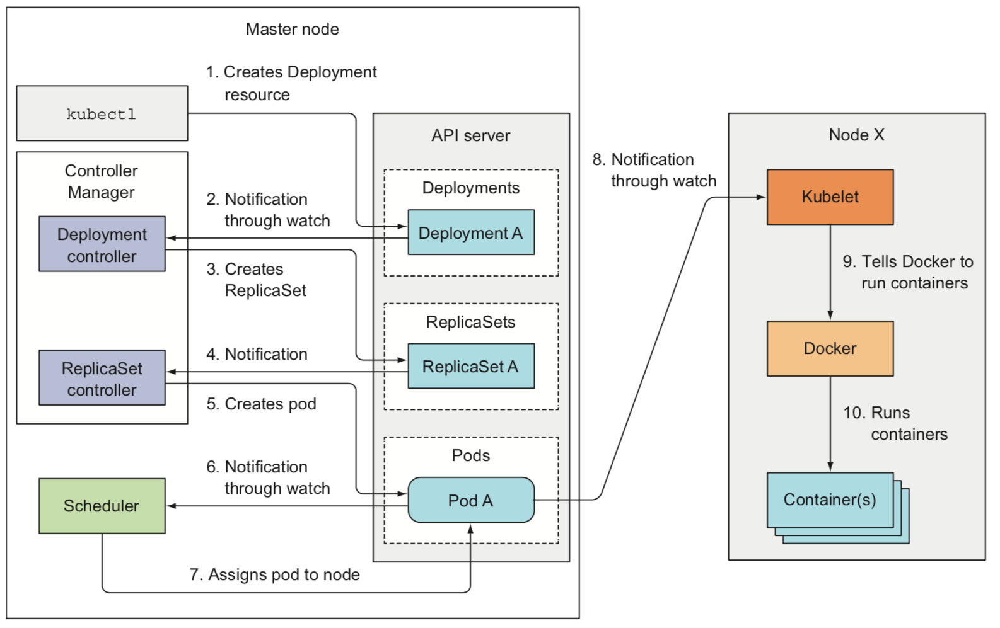

Kubernetes
Kubernetes is a system for automating deployment, scaling, and management of containerized applications
Resources
-
Kubernetes in Action (2017) by Marko Lukša (Book)
-
YouTube channels: Kubernetes and Cloud Native Computing Foundation
Blogs
- Running akka-cluster on Kubernetes
- Kubernetes: The Surprisingly Affordable Platform for Personal Projects
- Kubernetes from scratch to AWS with Terraform and Ansible
- Prometheus and Kubernetes: A Perfect Match
- Inside of Kubernetes Controller
- Exploring Kubernetes Operator Pattern
- Kubernetes: Make your services faster by removing CPU limits
- Optimizing Kubernetes Resource Requests/Limits for Cost-Efficiency and Latency
- What are Quality of Service (QoS) Classes in Kubernetes
- How to detect Kubernetes overspending by measuring idle costs
Architecture
At the hardware level, a Kubernetes cluster node can be
- a master node, which hosts the Kubernetes Control Plane that manages the state of the cluster
- The Kubernetes API Server to communicate with the cluster and the only component that talks to etcd directly
- The Scheduler, which schedules apps (assigns a worker node to each deployable component)
- The Controller Manager, which performs cluster-level functions, such as replicating components, keeping track of worker nodes handling node failures, and so on
- etcd, a fast, distributed, and consistent key-value store which is the only place where cluster state and metadata are stored
- a worker nodes that run containerized applications
- Docker, rkt, or another container runtime, which runs containers
- The Kubelet, which talks to the API server and manages containers on its node
- The Kubernetes Service Proxy (kube-proxy), which load-balances network traffic between application components
- some of the add-on components are
- Kubernetes DNS server
- Dashboard
- Ingress controller
- Heapster
- Container Network Interface network plugin


- To run an application in Kubernetes, it needs to be packaged into one or more container images, those images need to be pushed to an image registry, and then a description of the app posted to the Kubernetes API Server
- When the API server processes the app's description, the Scheduler schedules (pods are run immediately) the specified groups of containers onto the available worker nodes based on computational resources required by each group and the unallocated resources on each node at that moment
- The Kubelet on those nodes then instructs the Container Runtime (Docker, for example) to pull the required container images and run the containers
- Once the application is running, Kubernetes continuously makes sure that the deployed state of the application always matches the description you provided
- To allow clients to easily find containers that provide a specific service, it's possible to tell Kubernetes which containers provide the same service and Kubernetes will expose all of them at a single static IP address and expose that address to all applications running in the cluster
- User interacts with the cluster through the
kubectlcommand line client, which issues REST requests to the Kubernetes API server running on the master node

-
One of the most fundamental Kubernetes principles is that instead of telling Kubernetes exactly what actions it should perform, you're only declaratively changing the desired state of the system and letting Kubernetes examine the current actual state and reconcile it with the desired state
-
Resource definition example
apiVersion: v1
# type of resource
kind: Pod
# includes the name, namespace, labels, and other information about the pod
metadata:
...
# contains the actual description of the pod's contents,
# such as the pod's containers, volumes, and other data
spec:
...
# contains the current information about the running pod,
# such as what condition the pod is in, the description and status of each container,
# and the pod's internal IP and other basic info
status:
...
- A label is an arbitrary key-value pair you attach to a resource, which is then utilized when selecting resources using label selectors and a resource can have more than one label
- Annotations are key-value pairs like labels, but they aren't meant to hold identifying information and can hold up to 256 KB
- Using multiple namespaces allows to split complex systems with numerous components into smaller distinct groups and resource names only need to be unique within a namespace
- A pod is a group of one or more tightly related containers that will always run together on the same worker node and in the same Linux namespace(s). Each pod is like a separate logical machine with its own IP, hostname, processes, and so on, running a single application
- A ReplicationController is a resource that ensures its pods are always kept running and an exact number of pods always matches its label selector, even if a node disappears. It's made by
- a label selector, which determines what pods are in the ReplicationController's scope
- a replica count, which specifies the desired number of pods that should be running
- a pod template, which is used when creating new pod replicas
- A ReplicaSet behaves exactly like a ReplicationController (old), but it has more expressive pod selectors
- A DaemonSet is mostly for specific case like infrastructure-related pods that perform system-level operations in which a pod must run on each and every node in the cluster and each node needs to run exactly one instance of the pod, for example log collector and resource monitor
- A Job resource allows to run a pod whose container isn't restarted when the process running inside finishes successfully. A cron job in Kubernetes is configured by creating a CronJob resource
- A Service represents a static location for a group of one or more pods that all provide the same service. Requests coming to the IP and port of the service will be forwarded/load-balanced to the IP and port of one of the pods belonging to the service at that moment
- ExternalName type, a service that serves as an alias for an external service
- NodePort type, each cluster node opens a port on the node itself and redirects traffic received on that port to the underlying service
- LoadBalancer type (extension of NodePort), makes the service accessible through a dedicated load balancer which usually is supported and automatically provisioned by the cloud infrastructure
- A headless service still provides load balancing across pods, but through the DNS round-robin mechanism instead of through the service proxy, because DNS returns the pods' IPs, clients connect directly to the pods, instead of through the service proxy. Setting the clusterIP field in a service spec to None makes the service headless
- An Endpoints resource is a list of IP addresses and ports exposing a service. The Endpoints object needs to have the same name as the service and contain the list of target IP addresses and ports for the service
- An Ingress operates at the application layer of the network stack (HTTP) and can provide features such as cookie-based session affinity. LoadBalancer service requires its own load balancer with its own public IP address, whereas an Ingress only requires one
- The Kubelet on the node hosting the pod can check if a container is still alive through liveness probes using httpGet, tcpSocket or exec. Exit code is a sum of
128 + Ne.g.137 = 128 + 9(SIGKILL) or143 = 128 + 15(SIGTERM). Always remember to set an initial delay initialDelaySeconds - The readiness probes is invoked periodically and determines whether the specific pod should receive client requests or not. Liveness probes keep pods healthy by killing off unhealthy containers and replacing them with new, healthy ones, whereas readiness probes make sure that only pods that are ready to serve requests receive them and this is mostly necessary during container start up
- A volume is a component of a pod and not a standalone object, it cannot be created or deleted on its own. A volume is available to all containers in the pod, but it must be mounted in each container that needs to access it
- emptyDir, a simple empty directory used for storing transient data
- hostPath, used for mounting directories from the worker node's filesystem into the pod
- gitRepo, a volume initialized by checking out the contents of a Git repository
- nfs, an NFS share mounted into the pod
- gcePersistentDisk (Google Compute Engine Persistent Disk), awsElasticBlockStore (Amazon Web Services Elastic Block Store Volume), azureDisk (Microsoft Azure Disk Volume), used for mounting cloud provider-specific storage
- cinder, cephfs, iscsi, flocker, glusterfs, quobyte, rbd, flexVolume, vsphereVolume, photonPersistentDisk, scaleIO, used for mounting other types of network storage
- configMap, secret, downwardAPI, a special types of volumes used to expose certain Kubernetes resources and cluster information to the pod
- persistentVolumeClaim, a way to use a pre- or dynamically provisioned persistent storage
- An app can be configured by
- passing command-line arguments to containers with
commandandargs - setting custom environment variables for each container of a pod
- mounting configuration files into containers through a special type of volume
- passing command-line arguments to containers with
- The contents of a ConfigMap are passed to containers as either environment variables or as files in a volume while on the nodes
- Secrets are always stored in memory and never written to physical storage (maximum size of a Secret is limited to 1MB)
- The Downward API enables you to expose the pod's own metadata to the processes running inside that pod (it isn't a REST endpoint)
- Rolling update means replace pods step by step slowly scaling down the previous version and scaling up the new one
- A Deployment is a higher-level resource meant for deploying applications and updating them declaratively, instead of doing it through a ReplicationController or a ReplicaSet, which are both considered lower-level concepts. A Deployment doesn't manage pods directly, instead it creates a new ReplicaSet which is scaled up slowly, while the previous ReplicaSet is scaled down to zero. See also
minReadySeconds,maxSurgeandmaxUnavailableproperties - A StatefulSet makes sure pods are rescheduled in such a way that they retain their identity and state. StatefulSets were initially called PetSets, that name comes from the pets vs. cattle analogy. Each pod created by a StatefulSet is assigned an ordinal index (zero-based), which is then used to derive the pod's name and hostname, and to attach stable storage to the pod.
- A StatefulSet requires to create a corresponding governing headless Service (
clusterIP=None) that's used to provide the actual network identity to each pod, in this case each pod gets its own DNS entry. The new pod isn't necessarily scheduled to the same node. Scaling the StatefulSet creates a new pod instance with the next unused ordinal index. Scaling down a StatefulSet always removes the instances with the highest ordinal index first. StatefulSets don't delete PersistentVolumeClaims when scaling down and they reattach them when scaling back up - Clients watch for changes by opening an HTTP connection to the API server. Through this connection, the client will then receive a stream of modifications to the watched objects

- The Scheduler waits for newly created pods through the API server's watch mechanism and assign a node to each new pod that doesn't already have the node set. The Scheduler doesn't instruct the selected node (or the Kubelet running on that node) to run the pod. All the Scheduler does is update the pod definition through the API server. The API server then notifies the Kubelet that the pod has been scheduled. As soon as the Kubelet on the target node sees the pod has been scheduled to its node, it creates and runs the pod's containers
- The single Controller Manager process currently combines a multitude of controllers performing various reconciliation tasks
- Replication Manager (a controller for ReplicationController resources)
- ReplicaSet, DaemonSet, and Job controllers
- Deployment controller
- StatefulSet controller
- Node controller
- Service controller
- Endpoints controller
- Namespace controller
- PersistentVolume controller
- Others
- Controllers do many different things, but they all watch the API server for changes to resources and perform operations for each change. In general, controllers run a reconciliation loop, which reconciles the actual state with the desired state (specified in the resource's
specsection) and writes the new actual state to the resource'sstatussection - The Kubelet is the component responsible for everything running on a worker node. Its initial job is to register the node it's running on by creating a Node resource in the API server. Then it needs to continuously monitor the API server for Pods that have been scheduled to the node, and start the pod's containers. It does this by telling the configured container runtime (i.e. Docker) to run a container from a specific container image. The Kubelet then constantly monitors running containers and reports their status, events, and resource consumption to the API server. The Kubelet is also the component that runs the container liveness probes, restarting containers when the probes fail. Lastly, it terminates containers when their Pod is deleted from the API server and notifies the server that the pod has terminated
- Every worker node also runs the kube-proxy (Service Proxy), whose purpose is to make sure clients can connect to the services you define through the Kubernetes API and performs load balancing across those pods. The current, implementation only uses iptables rules to redirect packets to a randomly selected backend pod without passing them through an actual proxy server

- Every pod is associated with a
ServiceAccount, which represents the identity of the app running in the pod. The token file/var/run/secrets/kubernetes.io/serviceaccount/token, which is mounted into each container's filesystem through a secret volume, holds the ServiceAccount's authentication token used to connect to the API server - RBAC (role-based access control) plugin prevents unauthorized users from viewing or modifying the cluster state. Roles are managed by
Roles,ClusterRoles,RoleBindingsandClusterRoleBindingsresources. Cluster level resources are not namespaced. Roles define what can be done, while bindings define who can do it
Setup
Requirements
Local cluster
# verify installation
minikube version
# lifecycle
minikube start --vm-driver=virtualbox
minikube stop
minikube delete
# dashboard
export NO_PROXY=localhost,127.0.0.1,$(minikube ip)
minikube dashboard
# access
minikube ssh
docker ps -a
# reuse the minikube's built-in docker daemon
eval $(minikube docker-env)
# access NodePort services
minikube service <SERVICE_NAME> [-n <NAMESPACE>]
# list addons
minikube addons list
# enable addon
minikube addons enable <ADDON_NAME>
# (?) swagger
minikube start --extra-config=apiserver.Features.EnableSwaggerUI=true
kubectl proxy
open http://localhost:8080/swagger-ui
Basic
# verify installation
kubectl version
# cluster info
kubectl cluster-info
kubectl get nodes
kubectl describe nodes
kubectl config view
# health status of each control plane component
kubectl get componentstatuses
# namespace
kubectl create namespace <NAMESPACE_NAME>
kubectl get namespaces
kubectl config view | grep namespace
kubectl delete namespace <NAMESPACE_NAME>
# current namespace
kubectl config current-context
# switch namespace
kubectl config set-context $(kubectl config current-context) --namespace=<NAMESPACE_NAME>
# create/update resources from file
kubectl create -f <FILE_NAME>.yaml
kubectl apply -f <FILE_NAME>.yaml
# explain fields
kubectl explain pod
kubectl explain service.spec
# edit resource (vim)
kubectl edit pod <POD_NAME>
# verbosity
kubectl get pods --v 6
# access etcd on minikube
minikube ssh
docker run \
--rm \
-p 12379:2379 \
-p 12380:2380 \
--mount type=bind,source=/tmp/etcd-data.tmp,destination=/etcd-data \
--name etcd-gcr-v3.3.10 \
gcr.io/etcd-development/etcd:v3.3.10 \
/usr/local/bin/etcd \
--name s1 \
--data-dir /etcd-data \
--listen-client-urls http://0.0.0.0:12379 \
--advertise-client-urls http://0.0.0.0:12379 \
--listen-peer-urls http://0.0.0.0:12380 \
--initial-advertise-peer-urls http://0.0.0.0:12380 \
--initial-cluster s1=http://0.0.0.0:12380 \
--initial-cluster-token tkn \
--initial-cluster-state new
docker exec etcd-gcr-v3.3.10 /bin/sh -c "ETCDCTL_API=3 /usr/local/bin/etcdctl version"
docker exec etcd-gcr-v3.3.10 /bin/sh -c "ETCDCTL_API=3 /usr/local/bin/etcdctl get /registry --endpoints=127.0.0.1:12379"
# watch cluster events
kubectl get events --watch
Simple deployment
# deploy demo app
kubectl run kubernetes-bootcamp \
--image=gcr.io/google-samples/kubernetes-bootcamp:v1 \
--port=8080 \
--labels='app=kubernetes-bootcamp'
# update app
kubectl set image deployments/kubernetes-bootcamp \
kubernetes-bootcamp=jocatalin/kubernetes-bootcamp:v2
# verify update
kubectl rollout status deployments/kubernetes-bootcamp
kubectl rollout history deployments/kubernetes-bootcamp
# undo latest deployment
kubectl rollout undo deployments/kubernetes-bootcamp
# undo deployment to revision N
kubectl rollout undo deployment <DEPLOYMENT_NAME> --to-revision=N
# pause/resume deployment
kubectl rollout pause deployment <DEPLOYMENT_NAME>
kubectl rollout resume deployment <DEPLOYMENT_NAME>
# list deployments
kubectl get deployments
kubectl describe deployment
# create deployment from file (records the command in the revision history)
kubectl create -f <FILE_NAME>.yaml --record
# manually slowdown a rolling update
kubectl patch deployment <DEPLOYMENT_NAME> -p '{"spec": {"minReadySeconds": 10}}'
Pod and Container
# proxy cluster (open in 2nd terminal)
kubectl proxy
# pod name
export POD_NAME=$(kubectl get pods -l app=kubernetes-bootcamp -o go-template --template '{{range .items}}{{.metadata.name}}{{"\n"}}{{end}}')
echo POD_NAME=$POD_NAME
# verify proxy
http :8001/version
http :8001/api/v1/proxy/namespaces/default/pods/$POD_NAME/
# view logs
kubectl logs $POD_NAME
kubectl logs <POD_NAME> -c <CONTAINER_NAME>
kubectl logs <POD_NAME> --previous
# execute command on container
kubectl exec $POD_NAME printenv
kubectl exec $POD_NAME ls -- -la
# access container
kubectl exec -it $POD_NAME bash
# verify label
kubectl describe pods $POD_NAME
# list containers inside pods
kubectl describe pods
# list pods
kubectl get pods
# list pods and nodes
kubectl get pods -o wide
# list pods with labels
kubectl get po --show-labels
kubectl get pods -L <LABEL_KEY>
# filter with equality-based labels
kubectl get pods -l app=kubernetes-bootcamp
kubectl get pods -l app
kubectl get pods -l '!app'
# filter with set-based labels
kubectl get pods -l 'app in (kubernetes-bootcamp)'
# add/update labels manually
kubectl label po <POD_NAME> <LABEL_KEY>=<LABEL_VALUE>
kubectl label po <POD_NAME> <LABEL_KEY>=<LABEL_VALUE> --overwrite
# annotate
kubectl annotate pod <POD_NAME> <LABEL_KEY>=<LABEL_VALUE>
# print definition
kubectl get pod <POD_NAME> -o json
kubectl get pod <POD_NAME> -o yaml
# output json
kubectl get pod <POD_NAME> -o json | jq '.metadata'
# output json
kubectl get pod <POD_NAME> -o yaml | yq '.metadata.annotations'
# output yaml
kubectl get pod <POD_NAME> -o yaml | yq -y '.metadata.annotations'
# by namespace
kubectl get ns
kubectl get pod --namespace kube-system
kubectl get po --all-namespaces
# watch for changes
kubectl get pods --watch
kubectl get pods -o yaml --watch
# (debug) forward a local network port to a port in the pod (without service)
kubectl port-forward <POD_NAME> <LOCAL_PORT>:<POD_PORT>
# delete (sends SIGTERM to containers and waits 30 seconds, otherwise sends SIGKILL)
kubectl delete po <POD_NAME>
kubectl delete pod -l <LABEL_KEY>=<LABEL_VALUE>
kubectl delete po --all
Service
# list services
kubectl get svc
kubectl get services
# create service
kubectl expose deployment/kubernetes-bootcamp \
--type="NodePort" \
--port 8080
# service info
kubectl describe services/kubernetes-bootcamp
# expose service
export NODE_PORT=$(kubectl get services/kubernetes-bootcamp -o go-template='{{(index .spec.ports 0).nodePort}}')
echo NODE_PORT=$NODE_PORT
# verify service
curl $(minikube ip):$NODE_PORT
# add 4 replicas
kubectl scale deployments/kubernetes-bootcamp --replicas=4
# info
kubectl get pod,deployment,service
kubectl get pods -o wide
kubectl describe deployments/kubernetes-bootcamp
# cleanup
kubectl delete deployment,service kubernetes-bootcamp
# all (means all resource types)
# --all (means all resource instances)
kubectl delete all --all
Other
# replication controller
kubectl get rc
kubectl get replicationcontroller
# replica set
kubectl get rs
kubectl get replicaset
# jobs
kubectl get jobs
# ingress
kubectl get ingress
# persistent volume, claim and storage class
kubectl get pv
kubectl get pvc
kubectl get sc
# jsonpath example
kubectl get nodes -o jsonpath='{.items[*].status.addresses[?(@.type=="ExternalIP")].address}'
# create config map
kubectl create configmap my-config \
--from-literal=my-key-1=my-value-1 \
--from-literal=my-key-2=my-value-2
# print config-map
kubectl get configmap my-config -o yaml
# secrets
kubectl get secrets
kubectl describe secrets
kubectl exec <POD_NAME> ls /var/run/secrets/kubernetes.io/serviceaccount/
# create secrets (generic|tls|docker-registry)
echo bar > foo.secure
kubectl create secret generic my-secret --from-file=foo.secure
# contents are shown as Base64-encoded strings
kubectl get secret my-secret -o yaml
# prints "bar"
echo YmFyCg== | base64 -D
# rbac
kubectl get clusterroles
kubectl get clusterrolebindings
kubectl get roles
kubectl get rolebindings
# access api server from local machine
kubectl proxy
http :8001
http :8001/api/v1/pods
# access api server from a container
# (create)
kubectl run hello-curl \
--image=tutum/curl \
--command -- "sleep" "9999999"
# (exec)
kubectl exec -it hello-curl-XXX bash
# (verify envs)
printenv
# (missing certificate)
curl -k https://kubernetes
# (list secrets)
ls -laht /var/run/secrets/kubernetes.io/serviceaccount/
# (specify certificate)
curl --cacert /var/run/secrets/kubernetes.io/serviceaccount/ca.crt https://kubernetes
# (specify token, namespace and default certificate) or "https://kubernetes.default/api/v1"
export KUBE_TOKEN=$(cat /var/run/secrets/kubernetes.io/serviceaccount/token)
export KUBE_NS=$(cat /var/run/secrets/kubernetes.io/serviceaccount/namespace)
export CURL_CA_BUNDLE=/var/run/secrets/kubernetes.io/serviceaccount/ca.crt
curl -v \
-H "Authorization: Bearer $KUBE_TOKEN" \
https://$KUBERNETES_SERVICE_HOST:$KUBERNETES_PORT_443_TCP_PORT/api/v1/namespaces/$KUBE_NS/pods
# @see also ambassador container pattern based on kubectl-proxy
# api server proxy to invoke endpoint on resource
kubectl proxy
curl localhost:8001/api/v1/namespaces/<NAMESPACE_NAME>/<pods|services|...>/<RESOURCE_NAME>/proxy/<PATH>
# temporary command
kubectl run \
-it srvlookup \
--image=tutum/dnsutils \
--rm \
--restart=Never \
-- dig <SERVICE_NAME> kubia.default.svc.cluster.local
# temporary container
kubectl run \
-it phusion \
--image=phusion/baseimage:latest \
--rm \
--restart=Never \
bash
Alternative ways of modify resources
# opens the object's manifest in default editor
kubectl edit
# modifies individual properties of an object
kubectl patch
# creates or modifies the object by applying property values from a full YAML or JSON file
kubectl apply
# same as apply but only if not exists
kubectl create
# same as apply but only if exists
kubectl replace
# changes the container image
kubectl set image
Helm
Helm installs charts into Kubernetes, creating a new release for each installation. And to find new charts, you can search Helm chart repositories
- A Chart is a Helm package. It contains all of the resource definitions necessary to run an application, tool, or service inside of a Kubernetes cluster. Think of it like the Kubernetes equivalent of a Homebrew formula, an Apt dpkg, or a Yum RPM file
- A Repository is the place where charts can be collected and shared
- A Release is an instance of a chart running in a Kubernetes cluster
Resources
Commands
# linux
sudo snap install helm --classic
# mac
brew install kubernetes-helm
# setup client only
helm init --client-only
# search
helm search <CHART>
helm search postgresql
# info
helm inspect <CHART>
helm inspect stable/postgresql
helm inspect values stable/postgresql
helm get values <KEY>
helm status <CHART>
helm list
helm list --all
# install public chart [install|upgrade|rollback|delete]
helm install <CHART>
helm install -f <CONFIG_OVERRIDE>.yaml <CHART>
helm delete <CHART>
# repository
helm repo list
helm repo add <NAME> https://<DOMAIN>/<PATH>
helm repo update
# custom chart
helm create my-chart
helm lint my-chart
helm package my-chart
helm install ./my-chart
helm install --dry-run --debug ./my-chart
# plugin
$(helm home)/plugins
helm plugin install <PATH|URL>